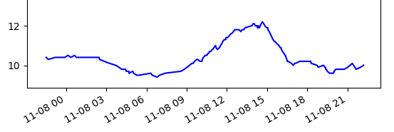

Last update on 25/04/2020
LaCrosse TX141TH Checksum
Introduction
I have at home a Lacrosse meteo station with its TX141TH-BV2 sensor. During building my proper smart home installation, I was wondering if I could integrate this sensor to my Raspberry PI server. The sensor communicates on 433 MHz radio frequency with the meteo station.
Packet Description
In the internet I found a lot of information about the packet description. Each packet contains 12 identical words of 40 bits. Each 40-bit word contains:
- bits from 32 to 39: ID (always 0xAA)
- bits from 28 to 31: mode (always 0x00)
- bits from 16 to 27: temperature represented as T (in gegrees C) * 10 + 500
- bits from 8 to 15: relative humidity in %
- bits from 0 to 7: checksum
Some examples of such words can be found here:
1010 1010 0000 0010 1101 1011 0010 0100 1010 0000
----ID--- AUTO ----TEMPER---- ---HUM--- --CHKSM--
170 731 36
1010 1010 0000 0010 0101 0001 0000 0001 0010 101X
----ID--- AUTO ----TEMPER---- ---HUM--- --CHKSM--
1010 1010 0000 0010 1111 1011 0001 1001 0010 101
----ID--- AUTO ----TEMPER---- ---HUM--- --CHKSM--
763(26,3°C) 25
1010 1010 0000 0010 1111 0001 0001 1110 0101 1010
----ID--- AUTO ----TEMPER---- ---HUM--- --CHKSM--
753(25,3°C) 30
Checksum Calculation
During my first implementations I couldn't find how the checksum was calculated. So, I started with no verification at all. And from time to time I saw some peaks on the temperature and humidity graphs. It would be possible to create a verification process based on 12 identical sending to find a correct word with a criterion of number of identical readings. But I found that it was not so interesting :).
So, I started some kind of reverse engineering. I found on several sites that it was very common for 433 MHz sensors to use a CRC8 algorithm with polynomial 0x31 and init value 0x00. But it didn't work for my sensor.
Doing some reveng, it confirmed
the usage of CRC8 with 0x31 polynomial but the init value changed every time.
Anyway I was (really) happy to discover that the init value didn't
change if checksum value was identical for not identical payload. For example,
payloads 0xAA03072D and 0xAA02FB26 both have the same checksum value 0x01.
I decided to bypass this limitation and created a \'redirection\' table to 'compensate' the init value issue. It consisted to convert a normal CRC8 to a Lacrosse one.
I wrote a Python script to validate the checksum algorithm. It takes a text file with written payloads (bits from 8 to 39) on input, one per line. On output it writes a calculated checksum, one per line. After that it was a simple procedure to check if calculated checksum corresponds to a received one.
You can find this script here:
import sys
class CRC8_0x31:
"""
Name : CRC-8
Poly : 0x31 x^8 + x^5 + x^4 + 1
Init : 0x00
Revert: false
XorOut: 0x00
"""
def __init__(self):
self.crcTable = (0x00, 0x31, 0x62, 0x53, 0xC4, 0xF5, 0xA6, 0x97,
0xB9, 0x88, 0xDB, 0xEA, 0x7D, 0x4C, 0x1F, 0x2E,
0x43, 0x72, 0x21, 0x10, 0x87, 0xB6, 0xE5, 0xD4,
0xFA, 0xCB, 0x98, 0xA9, 0x3E, 0x0F, 0x5C, 0x6D,
0x86, 0xB7, 0xE4, 0xD5, 0x42, 0x73, 0x20, 0x11,
0x3F, 0x0E, 0x5D, 0x6C, 0xFB, 0xCA, 0x99, 0xA8,
0xC5, 0xF4, 0xA7, 0x96, 0x01, 0x30, 0x63, 0x52,
0x7C, 0x4D, 0x1E, 0x2F, 0xB8, 0x89, 0xDA, 0xEB,
0x3D, 0x0C, 0x5F, 0x6E, 0xF9, 0xC8, 0x9B, 0xAA,
0x84, 0xB5, 0xE6, 0xD7, 0x40, 0x71, 0x22, 0x13,
0x7E, 0x4F, 0x1C, 0x2D, 0xBA, 0x8B, 0xD8, 0xE9,
0xC7, 0xF6, 0xA5, 0x94, 0x03, 0x32, 0x61, 0x50,
0xBB, 0x8A, 0xD9, 0xE8, 0x7F, 0x4E, 0x1D, 0x2C,
0x02, 0x33, 0x60, 0x51, 0xC6, 0xF7, 0xA4, 0x95,
0xF8, 0xC9, 0x9A, 0xAB, 0x3C, 0x0D, 0x5E, 0x6F,
0x41, 0x70, 0x23, 0x12, 0x85, 0xB4, 0xE7, 0xD6,
0x7A, 0x4B, 0x18, 0x29, 0xBE, 0x8F, 0xDC, 0xED,
0xC3, 0xF2, 0xA1, 0x90, 0x07, 0x36, 0x65, 0x54,
0x39, 0x08, 0x5B, 0x6A, 0xFD, 0xCC, 0x9F, 0xAE,
0x80, 0xB1, 0xE2, 0xD3, 0x44, 0x75, 0x26, 0x17,
0xFC, 0xCD, 0x9E, 0xAF, 0x38, 0x09, 0x5A, 0x6B,
0x45, 0x74, 0x27, 0x16, 0x81, 0xB0, 0xE3, 0xD2,
0xBF, 0x8E, 0xDD, 0xEC, 0x7B, 0x4A, 0x19, 0x28,
0x06, 0x37, 0x64, 0x55, 0xC2, 0xF3, 0xA0, 0x91,
0x47, 0x76, 0x25, 0x14, 0x83, 0xB2, 0xE1, 0xD0,
0xFE, 0xCF, 0x9C, 0xAD, 0x3A, 0x0B, 0x58, 0x69,
0x04, 0x35, 0x66, 0x57, 0xC0, 0xF1, 0xA2, 0x93,
0xBD, 0x8C, 0xDF, 0xEE, 0x79, 0x48, 0x1B, 0x2A,
0xC1, 0xF0, 0xA3, 0x92, 0x05, 0x34, 0x67, 0x56,
0x78, 0x49, 0x1A, 0x2B, 0xBC, 0x8D, 0xDE, 0xEF,
0x82, 0xB3, 0xE0, 0xD1, 0x46, 0x77, 0x24, 0x15,
0x3B, 0x0A, 0x59, 0x68, 0xFF, 0xCE, 0x9D, 0xAC)
self.lacrosseTable = (
0 , 49 , 98 , 83 , 196 , 245 , 166 , 151 , 185 , 136 ,
219 , 234 , 125 , 76 , 31 , 46 , 67 , 114 , 33 , 16 ,
135 , 182 , 229 , 212 , 250 , 203 , 152 , 169 , 62 , 15 ,
92 , 109 , 134 , 183 , 228 , 213 , 66 , 115 , 32 , 17 ,
63 , 14 , 93 , 108 , 251 , 202 , 153 , 168 , 197 , 244 ,
167 , 150 , 1 , 48 , 99 , 82 , 124 , 77 , 30 , 47 ,
184 , 137 , 218 , 235 , 61 , 12 , 95 , 110 , 249 , 200 ,
155 , 170 , 132 , 181 , 230 , 215 , 64 , 113 , 34 , 19 ,
126 , 79 , 28 , 45 , 186 , 139 , 216 , 233 , 199 , 246 ,
165 , 148 , 3 , 50 , 97 , 80 , 187 , 138 , 217 , 232 ,
127 , 78 , 29 , 44 , 2 , 51 , 96 , 81 , 198 , 247 ,
164 , 149 , 248 , 201 , 154 , 171 , 60 , 13 , 94 , 111 ,
65 , 112 , 35 , 18 , 133 , 180 , 231 , 214 , 122 , 75 ,
24 , 41 , 190 , 143 , 220 , 237 , 195 , 242 , 161 , 144 ,
7 , 54 , 101 , 84 , 57 , 8 , 91 , 106 , 253 , 204 ,
159 , 174 , 128 , 177 , 226 , 211 , 68 , 117 , 38 , 23 ,
252 , 205 , 158 , 175 , 56 , 9 , 90 , 107 , 69 , 116 ,
39 , 22 , 129 , 176 , 227 , 210 , 191 , 142 , 221 , 236 ,
123 , 74 , 25 , 40 , 6 , 55 , 100 , 85 , 194 , 243 ,
160 , 145 , 71 , 118 , 37 , 20 , 131 , 178 , 225 , 208 ,
254 , 207 , 156 , 173 , 58 , 11 , 88 , 105 , 4 , 53 ,
102 , 87 , 192 , 241 , 162 , 147 , 189 , 140 , 223 , 238 ,
121 , 72 , 27 , 42 , 193 , 240 , 163 , 146 , 5 , 52 ,
103 , 86 , 120 , 73 , 26 , 43 , 188 , 141 , 222 , 239 ,
130 , 179 , 224 , 209 , 70 , 119 , 36 , 21 , 59 , 10 ,
89 , 104 , 255 , 206 , 157 , 172 )
def crcByte(self, oldCrc, byte):
res = self.crcTable[(oldCrc & 0xFF) ^ (byte & 0xFF)]
return res
def crcRedir(self, crc):
res = self.lacrosseTable[crc]
return res
def main(argv):
"""Main function with arguments"""
with open(argv[1], 'r') as in_file:
with open(argv[2], 'w') as out_file:
for l in in_file:
d = int(l)
c = 0x00
crc = CRC8_0x31()
for i in range (4):
byte = (d >> (8 * (3 - i))) & 0xFF
c = crc.crcByte(c, byte)
c_redir = crc.crcRedir(c)
out_file.write(str(c_redir) + "\n")
# Execution: python3 checksum.py <input_file> <output_file>
argv = sys.argv
main(argv)
And, of course, a C code integrated to an STM32 microcontroller:
static uint8_t crc_table[] = {
0x00, 0x31, 0x62, 0x53, 0xC4, 0xF5, 0xA6, 0x97,
0xB9, 0x88, 0xDB, 0xEA, 0x7D, 0x4C, 0x1F, 0x2E,
0x43, 0x72, 0x21, 0x10, 0x87, 0xB6, 0xE5, 0xD4,
0xFA, 0xCB, 0x98, 0xA9, 0x3E, 0x0F, 0x5C, 0x6D,
0x86, 0xB7, 0xE4, 0xD5, 0x42, 0x73, 0x20, 0x11,
0x3F, 0x0E, 0x5D, 0x6C, 0xFB, 0xCA, 0x99, 0xA8,
0xC5, 0xF4, 0xA7, 0x96, 0x01, 0x30, 0x63, 0x52,
0x7C, 0x4D, 0x1E, 0x2F, 0xB8, 0x89, 0xDA, 0xEB,
0x3D, 0x0C, 0x5F, 0x6E, 0xF9, 0xC8, 0x9B, 0xAA,
0x84, 0xB5, 0xE6, 0xD7, 0x40, 0x71, 0x22, 0x13,
0x7E, 0x4F, 0x1C, 0x2D, 0xBA, 0x8B, 0xD8, 0xE9,
0xC7, 0xF6, 0xA5, 0x94, 0x03, 0x32, 0x61, 0x50,
0xBB, 0x8A, 0xD9, 0xE8, 0x7F, 0x4E, 0x1D, 0x2C,
0x02, 0x33, 0x60, 0x51, 0xC6, 0xF7, 0xA4, 0x95,
0xF8, 0xC9, 0x9A, 0xAB, 0x3C, 0x0D, 0x5E, 0x6F,
0x41, 0x70, 0x23, 0x12, 0x85, 0xB4, 0xE7, 0xD6,
0x7A, 0x4B, 0x18, 0x29, 0xBE, 0x8F, 0xDC, 0xED,
0xC3, 0xF2, 0xA1, 0x90, 0x07, 0x36, 0x65, 0x54,
0x39, 0x08, 0x5B, 0x6A, 0xFD, 0xCC, 0x9F, 0xAE,
0x80, 0xB1, 0xE2, 0xD3, 0x44, 0x75, 0x26, 0x17,
0xFC, 0xCD, 0x9E, 0xAF, 0x38, 0x09, 0x5A, 0x6B,
0x45, 0x74, 0x27, 0x16, 0x81, 0xB0, 0xE3, 0xD2,
0xBF, 0x8E, 0xDD, 0xEC, 0x7B, 0x4A, 0x19, 0x28,
0x06, 0x37, 0x64, 0x55, 0xC2, 0xF3, 0xA0, 0x91,
0x47, 0x76, 0x25, 0x14, 0x83, 0xB2, 0xE1, 0xD0,
0xFE, 0xCF, 0x9C, 0xAD, 0x3A, 0x0B, 0x58, 0x69,
0x04, 0x35, 0x66, 0x57, 0xC0, 0xF1, 0xA2, 0x93,
0xBD, 0x8C, 0xDF, 0xEE, 0x79, 0x48, 0x1B, 0x2A,
0xC1, 0xF0, 0xA3, 0x92, 0x05, 0x34, 0x67, 0x56,
0x78, 0x49, 0x1A, 0x2B, 0xBC, 0x8D, 0xDE, 0xEF,
0x82, 0xB3, 0xE0, 0xD1, 0x46, 0x77, 0x24, 0x15,
0x3B, 0x0A, 0x59, 0x68, 0xFF, 0xCE, 0x9D, 0xAC
};
static uint8_t crc_redir_table[] = {
0 , 49 , 98 , 83 , 196 , 245 , 166 , 151 , 185 , 136 ,
219 , 234 , 125 , 76 , 31 , 46 , 67 , 114 , 33 , 16 ,
135 , 182 , 229 , 212 , 250 , 203 , 152 , 169 , 62 , 15 ,
92 , 109 , 134 , 183 , 228 , 213 , 66 , 115 , 32 , 17 ,
63 , 14 , 93 , 108 , 251 , 202 , 153 , 168 , 197 , 244 ,
167 , 150 , 1 , 48 , 99 , 82 , 124 , 77 , 30 , 47 ,
184 , 137 , 218 , 235 , 61 , 12 , 95 , 110 , 249 , 200 ,
155 , 170 , 132 , 181 , 230 , 215 , 64 , 113 , 34 , 19 ,
126 , 79 , 28 , 45 , 186 , 139 , 216 , 233 , 199 , 246 ,
165 , 148 , 3 , 50 , 97 , 80 , 187 , 138 , 217 , 232 ,
127 , 78 , 29 , 44 , 2 , 51 , 96 , 81 , 198 , 247 ,
164 , 149 , 248 , 201 , 154 , 171 , 60 , 13 , 94 , 111 ,
65 , 112 , 35 , 18 , 133 , 180 , 231 , 214 , 122 , 75 ,
24 , 41 , 190 , 143 , 220 , 237 , 195 , 242 , 161 , 144 ,
7 , 54 , 101 , 84 , 57 , 8 , 91 , 106 , 253 , 204 ,
159 , 174 , 128 , 177 , 226 , 211 , 68 , 117 , 38 , 23 ,
252 , 205 , 158 , 175 , 56 , 9 , 90 , 107 , 69 , 116 ,
39 , 22 , 129 , 176 , 227 , 210 , 191 , 142 , 221 , 236 ,
123 , 74 , 25 , 40 , 6 , 55 , 100 , 85 , 194 , 243 ,
160 , 145 , 71 , 118 , 37 , 20 , 131 , 178 , 225 , 208 ,
254 , 207 , 156 , 173 , 58 , 11 , 88 , 105 , 4 , 53 ,
102 , 87 , 192 , 241 , 162 , 147 , 189 , 140 , 223 , 238 ,
121 , 72 , 27 , 42 , 193 , 240 , 163 , 146 , 5 , 52 ,
103 , 86 , 120 , 73 , 26 , 43 , 188 , 141 , 222 , 239 ,
130 , 179 , 224 , 209 , 70 , 119 , 36 , 21 , 59 , 10 ,
89 , 104 , 255 , 206 , 157 , 172
};
/**
* Checksum verification regarding the Lacrosse algorithm.
*/
static int32_t radio_checksum_verify(uint32_t payload, uint32_t chk)
{
int32_t i;
uint32_t crc8_redir;
uint32_t crc8;
crc8 = 0u;
for (i = 0; i < 4; i++)
{
const uint32_t byte = (payload >> (8 * (3 - i))) & 0xFF;
crc8 = crc_table[(crc8 & 0xFF) ^ (byte & 0xFF)] & 0xFF;
}
crc8_redir = crc_redir_table[crc8];
return (chk == crc8_redir) ? 0 : -1;
}
Conclusion
Now the sensor works good. There is no unexpected peaks any more. You can see an example of such measurements during one day here:

Some Interesting Links
-
Source code of this project: https://github.com/tuppi-ovh/data-server-stm32
-
Arduino forum about decoding Lacrosse TX141TH-B: https://forum.arduino.cc/index.php?topic=390843.0
-
Online CRC Calculator: http://www.sunshine2k.de/coding/javascript/crc/crc_js.html
-
Integration of Lacrosse TX29-IT sensor: http://fredboboss.free.fr/articles/tx29.php
-
Application for checksum reverse engineering: http://reveng.sourceforge.net